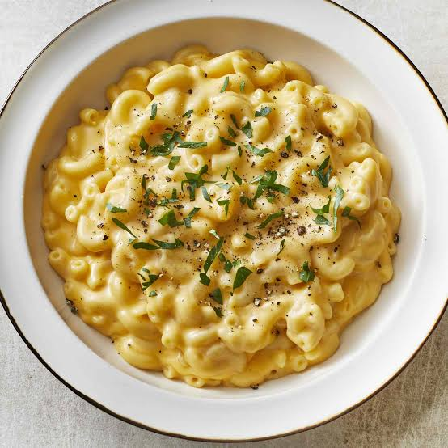

Macaroni Chesse
Home

This recipe is from an Spanish Grandmother who lives in Alicante
She used this ingredients to make it:
- 1 (8 ounce) box elbow macaroni
- ¼ cup butter
- ¼ cup all-purpose flour
- ½ teaspoon salt ground black pepper to taste
- 2 cups milk
- 2 cups shredded Cheddar cheese
Steps to make the recipe as the Spanish Grandmother:
- Gather the ingredients.
- Bring a large pot of lightly salted water to a boil. Cook elbow macaroni in the boiling water, stirring occasionally until tender yet firm to the bite, about 8 minutes.
- Meanwhile, melt butter in a saucepan over medium heat.
- Whisk in flour, salt, and black pepper until smooth, about 5 minutes.
- Slowly pour in milk, while constantly stirring; cook and stir until mixture is smooth and bubbling, about 5 minutes, making sure the milk doesn't burn.
- Add Cheddar cheese and stir until melted, 2 to 4 minutes.
- Drain macaroni and fold into cheese sauce until coated.
- Serve hot and enjoy!
Recipe From This Page